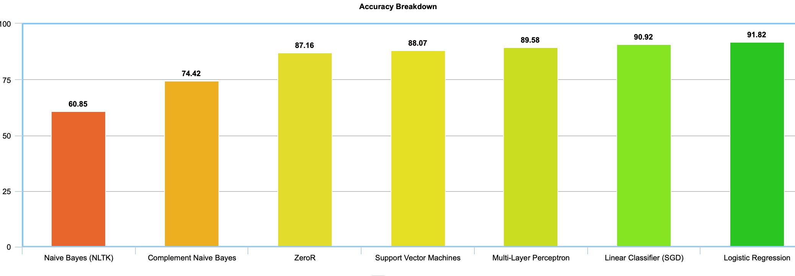

Have you ever been nervous about submitting a comment on YouTube? Or curious what comments get the most likes? Our project's task is to train a ML model on a viral YouTube videos and comments dataset, and correctly classify a comment as popular or unpopular. The popular classification is based on the number of likes a comment receives. If it is above a certain threshold, which is empirically determined based on the video ID, then that comment has a popular classification.
This task's importance pertains to understanding what goes into making the most liked comment possible. We think this topic will be of interest to those involved in social media and YouTube specifically.
For our model, we implemented our code within Python3 using both nltk and sk-learn libraries. We looked at six different techniques, ZeroR, naive bayes (nltk), complement naive bayes (sk-learn), multilayer perceptron (sk-learn), support vector machines (sk-learn), linear classifier with SGD training (sk-learn), and logistic regression (sk-learn).
We are using a dataset on Kaggle titled "Trending YouTube Video Statistics and Comments" which provides information and features on top trending videos. The attributes we are looking at are likes, video ID, and the content of the comment itself, which contains a sentence of words that we feed into our models.
We also had to take into account malformed comments, which included comments with emojis or other improperly formed data. This required our dataset to be cleaned.
The results of running our different models produced a large difference in accuracies. Our best-performing model was the logistic regression. Below is a bar graph with the accuracies of each model.

Accuracies of Models
The ZeroR accuracy was simply guessing that a comment would not be viral, which produces a baseline accuracy that is relatively high, 87.16%. Our Logistic Regression model, however, managed to net a nearly 5% increase in performance, which is substantial improvement given that there isn't much room to grow. Interestingly, even though Naive Bayes and Logistic Regression operate in the same hypothesis space, the NB classification was the only model that actually resulted in worse performance. We are happy with the accuracy of our LR model, as based on the comment sentiment for a video, we can correctly and more accurately classify a comment as popular or not.
Thomas Sieben (@ths13), thomassieben2019 [at] u [dot] northwestern [dot] edu
Michael Guo (@McGuo), michaelguo2019 [at] u [dot] northwestern [dot] edu